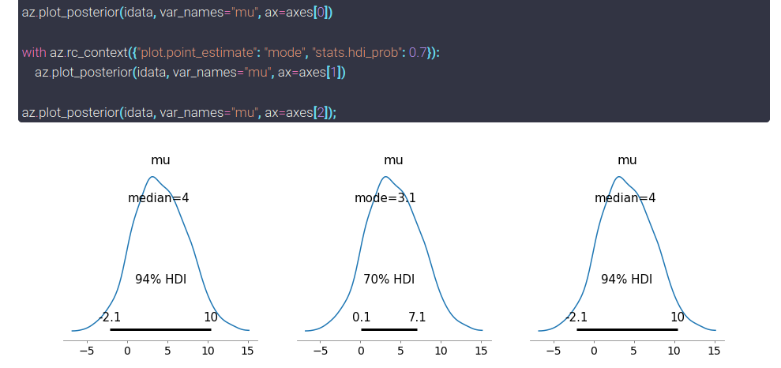

ArviZ customization with rcParams#
About#
ArviZ not only builds on top of matplotlib’s rcParams but also adds its own rcParams instance to handle specific settings. This post will only graze matplotlib’s rcParams, which are already detailed in matplotlib’s docs; it will dive into specific ArviZ rcParams.
Introduction#
Paraphrasing the description on rcParams in the documentation of matplotlib:
ArviZ uses arvizrc configuration files to customize all kinds of properties, which we call rcParams. You can control the defaults of many properties in ArviZ: data loading mode (lazy or eager), automatically showing generated plots, the default information criteria and so on.
There are several ways of modifying arviz.rcParams instance, each of them targeted to specific needs.
import arviz as az
import matplotlib.pyplot as plt
idata = az.load_arviz_data("centered_eight")
Customizing ArviZ#
arvizrc file#
To define default values on a per user or per project basis, arvizrc file should be used. When imported, ArviZ search for an arvizrc file in several locations sorted below by priority:
$PWD/arvizrc$ARVIZ_DATA/arvizrcOn Linux,
$XDG_CONFIG_HOME/arviz/arvizrc(if$XDG_CONFIG_HOMEis defined)or
$HOME/.config/arviz/arvizrc(if$XDG_CONFIG_HOMEis not defined)
On other platforms,
$HOME/.arviz/arvizrcif$HOMEis defined
Once one of these files is found, ArviZ stops looking and loads its configuration. If none of them are present, the values hardcoded in ArviZ codebase are used. The file used to set the default values in ArviZ can be obtained with the following command:
import arviz as az
print(az.rcparams.get_arviz_rcfile())
None
ArviZ has loaded a file used to set defaults on a per user basis. Unless I use a different rc file in the current directory or modify rcParams as explained above, this configuration will be automatically used every time ArviZ is imported.
This can be really useful to define the favourite backend or information criterion, written once in the rc file and ArviZ automatically uses the desired values.
Important
You should not rely on ArviZ defaults being always the same.
ArviZ strives to encourage best practices and therefore will change the default values whenever a new algorithm is developed to achieve this goal. If you rely on a specific value, you should either use an arvizrc template or set the defaults at the beggining of every script/notebook.
Dynamic rc settings#
To set default values on a per file or per project basis, rcParams can also be modified dynamically, either overwritting a specific key:
az.rcParams["data.load"] = "eager"
Note that rcParams is the instance to be modified, exactly like in matplotlib. Careful with capitalization!
Another option is to define a dictionary with several new defaults and update rcParams all at once.
rc = {
"data.load": "lazy",
"plot.max_subplots": 30,
"stats.ic_scale": "negative_log",
"plot.matplotlib.constrained_layout": False
}
az.rcParams.update(rc)
rc_context#
And last but not least, to temporarily use a different set of defaults, ArviZ also has a rc_context function. Its main difference and advantage is that it is a context manager, therefore, all code executed inside the context will use the defaults defined by rc_context but once we exit the context, everything goes back to normal. Let’s generate 3 posterior plots with the same command to show this:
_, axes = plt.subplots(1,3, figsize=(15,4))
az.plot_posterior(idata, var_names="mu", ax=axes[0])
with az.rc_context({"plot.point_estimate": "mode", "stats.hdi_prob": 0.7}):
az.plot_posterior(idata, var_names="mu", ax=axes[1])
az.plot_posterior(idata, var_names="mu", ax=axes[2]);
ArviZ default settings#
This section will describe ArviZ rcParams as version 0.8.3 (see GitHub for an up to date version).
Data#
The rcParams in this section are related to the data module in ArviZ, that is, they are either related to from_xyz converter functions or to InferenceData class.
data.http_protocol : {https, http}
Only the first two example datasets centered_eight and non_centered_eight come as part of ArviZ. All the others are downloaded from figshare the first time and stored locally to help reloading them the next time. We can get the names of the data available by not passing any argument to az.load_arviz_data (you can also get the description of each of them with az.list_datasets):
az.load_arviz_data().keys()
dict_keys(['centered_eight', 'non_centered_eight', 'radon', 'rugby', 'regression1d', 'regression10d', 'classification1d', 'classification10d'])
Thus, the first time you call az.load_arviz_data("radon"), ArviZ downloads the dataset using data.http_protocol. The default is set to https but if needed, it can be modified to http. Notice how there is no fallback, if downloading with https fails, there is no second try with http, an error is risen. To use http you have to set the rcParam explicitly.
data.index_origin : {0, 1}
ArviZ integration with Stan and Julia who use 1 based indexing motivate this rcParam. This rcParam is still at an early stage and its implementation is bound to vary, therefore it has no detailed description.
data.load : {lazy, eager}
Even when not using Dask, xarray’s default is to load data lazily into memory when reading from disk. ArviZ’s from_netcdf also uses the same default. That is, ArviZ functions that read data from disk from_netcdf and load_arviz_data do not load the data into memory unless data.load rcParam is set to eager.
Most use cases not only do not require loading data into memory but will also benefit from lazy loading. However, there is one clear exception: when too many files are lazily opened at the same time, xarray ends up crashing with extremely cryptic error messages, these cases require setting data loading to eager mode. One example of such situation is generating ArviZ documentation, we therefore set data.load to eager in sphinx configuration file.
data.metagroups : mapping of {str : list of str}
Warning
Do not overwrite data.metagroups as things may break, to add custom metagroups add new keys to the dictionary as shown below
One of the current projects in ArviZ is to extend the capabilities of InferenceData. One of the limitations was not allowing its functions and methods to be applied to several groups at the same time. Starting with ArviZ 0.8.0, InferenceData methods take arguments groups and filter_groups to overcome this limitation. These two combined arguments have the same capabilities as var_names+filter_vars in plotting functions: exact matching, like and regex matching like pandas and support for ArviZ ~ negation prefix and one extra feature: metagroups. So what are metagroups? Let’s see
for metagroup, groups in az.rcParams["data.metagroups"].items():
print(f"{metagroup}:\n {groups}\n")
posterior_groups:
('posterior', 'posterior_predictive', 'sample_stats', 'log_likelihood')
prior_groups:
('prior', 'prior_predictive', 'sample_stats_prior')
posterior_groups_warmup:
('_warmup_posterior', '_warmup_posterior_predictive', '_warmup_sample_stats')
latent_vars:
('posterior', 'prior')
observed_vars:
('posterior_predictive', 'observed_data', 'prior_predictive')
Imagine the data you passed to the model was rescaled, after converting to InferenceData you have to rescale the data again to its original values, but not only the observations, posterior and prior predictive values too!
Having to apply the rescaling manually to each of the three groups is tedious at best, and creating a variable called observed_vars storing a list with these 3 groups is problematic – when doing prior checks there is no posterior_predictive group, it’s a highway towards errors at every turn. Metagroups are similar to the variable approach but it’s already there and it applies the function only to present groups. Let’s add a new metagroup and use it to shift our data:
az.rcParams["data.metagroups"]["sampled"] = (
'posterior', 'posterior_predictive', 'sample_stats', 'log_likelihood', 'prior', 'prior_predictive'
)
shifted_idata = idata.map(lambda x: x-7, groups="sampled")
data.save_warmup : bool
If True, converter functions will store warmup iterations in the corresponding groups by default.
Note
data.save_warmup does not affect from_netcdf, all groups are always loaded from file
Plot#
General#
plot.backend : {matplotlib, bokeh}
Default plotting backend.
plot.max_subplots : int
Maximum number of subplots in a single figure. Adding too many subplots into a figure can be really slow, to the point that it looks like everthing has crashed without any error message. When there are more variables to plot than max_subplots allowed, ArviZ sends a warning and plots at most max_suplots. See for yourselves:
with az.rc_context({"plot.max_subplots": 3}):
az.plot_posterior(idata);
/home/oriol/venvs/arviz-dev/lib/python3.6/site-packages/arviz/plots/plot_utils.py:563: UserWarning: rcParams['plot.max_subplots'] (3) is smaller than the number of variables to plot (10) in plot_posterior, generating only 3 plots
UserWarning,
plot.point_estimate : {mean, median, model, None}
Default point estimate to include in plots like plot_posterior or plot_density.
Bokeh#
plot.bokeh.bounds_x_range, plot.bokeh.bounds_y_range : auto, None or tuple of (float, float), default auto
plot.bokeh.figure.dpi : int, default 60
plot.bokeh.figure.height, plot.bokeh.figure.width : int, default 500
plot.bokeh.layout.order : str, default default
Select subplot structure for bokeh. One of default, column, row, square, square_trimmed or Ncolumn (Nrow) where N is an integer number of columns (rows), here is one example to generate a subplot grid with 2 columns and the necessary rows to fit all variables.
with az.rc_context({"plot.bokeh.layout.order": "2column"}):
az.plot_ess(idata, backend="bokeh")
plot.bokeh.layout.sizing_mode : {fixed, stretch_width, stretch_height, stretch_both, scale_width, scale_height, scale_both}
plot.bokeh.layout.toolbar_location : {above, below, left, right, None}
Location for toolbar on bokeh layouts. None will hide the toolbar.
plot.bokeh.marker : str, default Cross
Default marker for bokeh plots. See bokeh reference on markers for more details.
plot.bokeh.output_backend : {webgl, canvas, svg}
plot.bokeh.show : bool, default True
Show bokeh plot before returning in ArviZ function.
plot.bokeh.tools : str, default reset,pan,box_zoom,wheel_zoom,lasso_select,undo,save,hove
Default tools in bokeh plots. More details on Configuring Plot Tools docs
Matplotlib#
Matplotlib already has its own rcParams, which are actually the inspiration for ArviZ rcParams. Therefore, this section is minimalistic.
plot.matplotlib.show : bool, default False
Call plt.show from within ArviZ plotting functions. This generally makes no difference in jupyter like environments, but it can be useful for instance in the IPython terminal when we don’t want to customize the plots genereted by ArviZ by changing titles or labels.
Stats#
stats.hdi_prob : float
Default probability of the calculated HDI intervals.
Important
This probability is completely arbitrary. ArviZ using 0.94 instead of the more common 0.95 aims to emphasize this arbitrary choice.
stats.information_criterion : {loo, waic}
Default information criterion used by compare and plot_elpd
stats.ic_pointwise : bool, default False
Return pointwise values when calling loo or waic. Pointwise values are an intermediate result and therefore setting ic_pointwise to true does not require extra computation.
stats.ic_scale : {log, deviance, negative_log}
Default information criterion scale. See docs on loo or waic for more detail.
Tip
Is there any extra rcParam you’d like to see in ArviZ? Check out arviz-devs/arviz#792, it’s more than possible you’ll be able to add it yourself!
Package versions used to generate this post:
%load_ext watermark
%watermark -n -u -v -iv -w
arviz 0.9.0
last updated: Mon Jun 29 2020
CPython 3.6.9
IPython 7.15.0
watermark 2.0.2
Comments are not enabled for the blog, to inquiry further about the contents of the post, ask on ArviZ Issues.